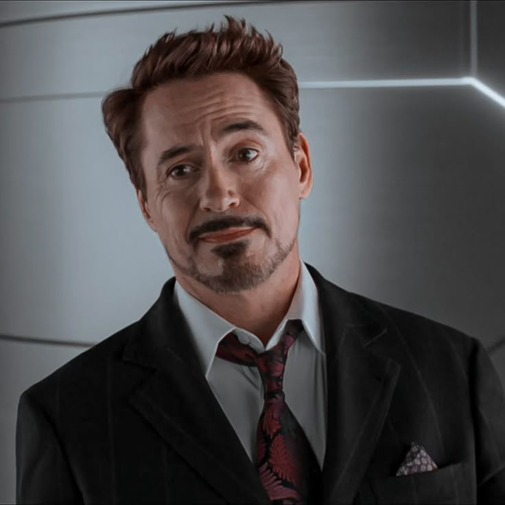
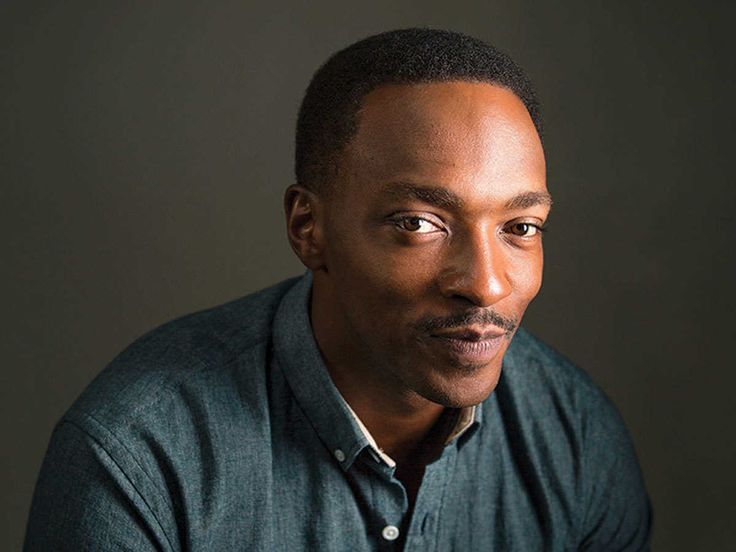

OUR HISTORY
AFTO (Association For The Old) was first founded in Pietermaritzburg, South Africa by two friends Steve and Sam. It began as a small house with the only elderly people being Steve's Granparents and Sams granfather, Sam said they started it because they wanted to take care of their Granparents. It has since grown into a trusted facilityfor elderly people. In 2003 the organization faced finacial troubles and was onthe brink of shutting down. Until Tony whos gradmother had been staying at the facility fpr a while decided tp buy some of the organization since he liked it so much. Therefore saving it and it has been thriving ever sine as a non profit organization dedicated to give our elderly the lives they deserve.
OUR MISSION and VISION
Our mission is to provide elderly members of our community with a safe, warm, and caring home, where they are supported by trained professionals and caring volunteers, and given the opportunity to stay active, social, and connected through community activities. And our vision is to be a leading old age home in South Africa, recognised for our commitment to the wellbeing and happiness of every resident, and for building a community where elderly people continue to thrive, connect, and feel at home.
Meet our Team
Steve Rogers
CEO and Co-founder
He founded AFTO alongside his best friend Sam Wilson.
Contact: 011 675 5345
Email: steve@afto.co.za
Tony Stark
Co-founder

Invested and became share owner in the organization saving it from shutting down in 2003.
Contact: 011 123 5345
Email: tony@afto.co.za
Sam Wilson
COO and Head of Care Services

Long time friend of Steve and ended up created this facility together
Contact: 011 675 5345
Email: sam@afto.co.za
T'Challa
Volunteer and donations Coordinator

Started as Volunteer and became full time after his father "T'chaka" stayed inthe facility for years
Contact: 011 235 5345
Email: Tchalla@afto.co.za